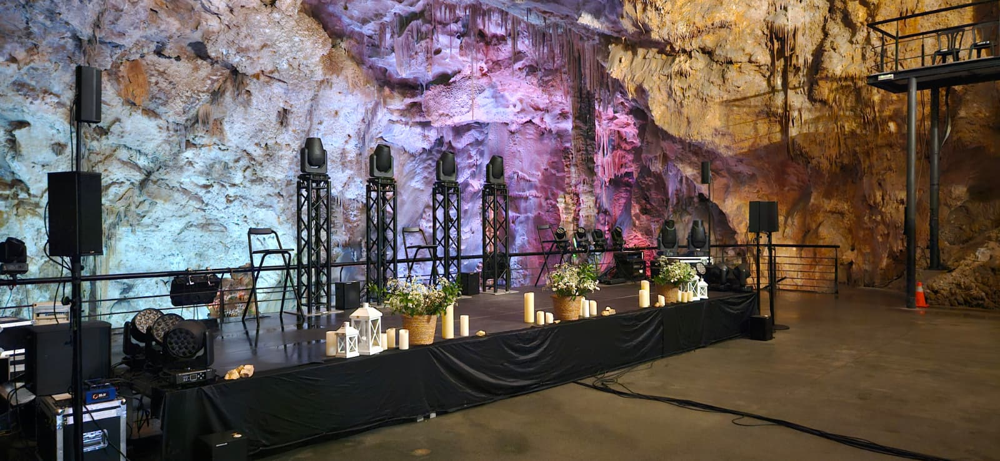
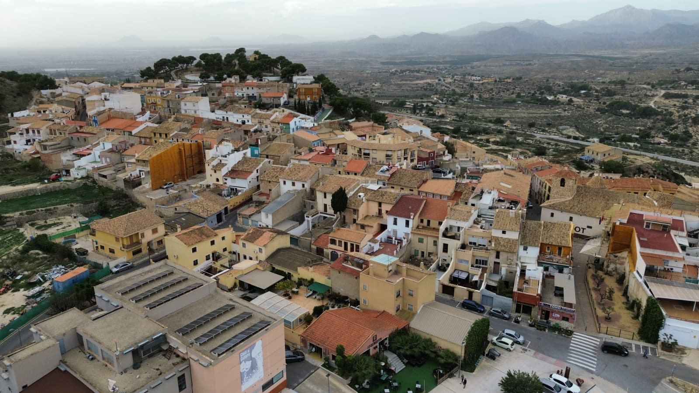

Signature stop
Canelobre Cave at the center of the tour
A short drive from Alicante leads into one of the most impressive cave interiors in the area, followed by a slower second half in Busot.
Costa Blanca Tour focuses on simple logistics, small groups, and places that still feel local. The main tour pairs the Canelobre Caves with Busot, then expands into more day trips and a wine option for guests who want something a little different.
Hosted by Yevgen, often praised in guest reviews for good pacing, clear communication, and a friendly style.

A short drive from Alicante leads into one of the most impressive cave interiors in the area, followed by a slower second half in Busot.

Castle ruins in the foreground, with the village gathered closely behind them.

A simple city-based starting point for short excursions outside Alicante.
Enough structure to feel easy, with enough space to never feel rushed.
Simple pickup and drop-off points around Alicante city.
Cave, village, viewpoints, and culture in one well-paced tour.
Reviews consistently mention calm communication and a friendly atmosphere.
A clear half-day plan: cave geology first, then Busot culture, with comfortable round-trip transport and no rushed transitions.

Cancel up to 24 hours in advance for a full refund.
Reserve now and keep plans flexible until the day is confirmed.
People with claustrophobia
Wheelchair users
The added Busot imagery helps explain the second half of the tour: less spectacle, more texture. Rooftops, stone paths, mountain edges, and a slower local rhythm.



This tour adds a stronger short-format option: a visit to a historic Spanish winery founded in 1707, a guided tasting of three wines with snacks, and bonus stops linked to Novelda's Gaudi-style church and the Castle of Mola.

Top rated at 4.9 out of 5 from 94 reviews, this small-group experience combines an 18th-century estate that belonged to the Marquis of La Romana, a guided tasting, and bonus architecture and castle stops.

The arrival sets the tone before the guided walk through the estate and production spaces.

Three wines are tasted with explanation, in a setting that feels more hosted than rushed.
“We had a great time. Ride was on time. Super friendly. Almost a private tour since it was not high season. Wine and snacks were very tasty.”Annabelhe, Canada · February 25, 2026
Alongside the cave tour, the site now includes the old-winery church tour, a mountain-and-waterfall day trip, and a more tailored private wine option for Alicante.
The core tour: easy pickup, mountain transfer, the cave visit, and time in Busot without trying to cram too much into the day.
A fuller day built around one of the Costa Blanca's best-known hilltop villages and the natural spring pools and waterfalls at Fonts d'Algar.
A relaxed tasting-focused tour through the Alicante DOP, with space for Monastrell, Fondillon, and a slower countryside pace.
Historic winery founded in 1707, production-room visit, 3-wine tasting with snacks, and bonus stops at the Gaudi-style church and Castle of Mola.
The same themes keep returning: small groups, easy transport, clear communication, interesting local context, and a guide who keeps the day relaxed instead of rushed.
From start to finish the experience was seamless. Transport was easy, Busot was lovely, and the whole day felt well looked after.
Yevgen was very informative with added humour. A lovely guide and a very easy day overall.
The group was small, we never felt rushed, and there was plenty of time to explore and take photos.
It was a last-minute booking and a very good one. Safe driving, comfortable transport, and clear local history throughout.
Everything was clear and personal. The guide was sincere, communicative, and gave full attention to the group.
Stress-free logistics, interesting facts, and a genuinely personal atmosphere. It was easy to recommend after the tour.
The website keeps the booking story straightforward. Guests choose the tour, send the main details, and pick the meeting point that suits them best.
The tours are designed for guests staying in Alicante who want a clear plan, good hosting, and a trip that still feels personal.